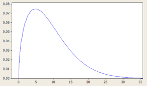
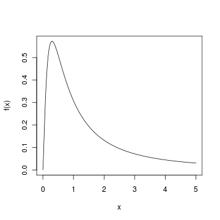

Methods in Political Science
Statistical Methods
Sirus Dehdari
Department of Political Science, Stockholm University
Practical information
- My office: F758 in building F (7th floor). My email: sirus.dehdari@statsvet.su.se
- The lectures follow the text by Marcus Österman & Olle Folke (available on Canvas)
- Each “week” consists of: lecture, Stata workshop, office hours, seminars (except the first week), three weeks in total
- At the end of each week you hand in that week’s “written assignment”
- You hand in as a group through Canvas, the same groups as in the first part of the course
Written Assignment
- Ahead of the seminars, your group should make a serious attempt at answering all the questions
- All group members should participate in every part! If someone in your group is not participating, contact your seminar leader
- The submission must be in pdf format and must not contain any photos or screenshots whatsoever
- Write the group members’ names on the submission
- You are not allowed to let AI write the assignments for you, but feel free to use AI tools to help you learn how to use Stata
- Attendance at the seminars is mandatory
Office hours and other questions
- Come to office hours if you have questions about the assignments or the course material: these sessions exist to support your learning
- I have limited capacity to answer questions by email, so please make use of office hours instead
- Contact the course admin with questions about e.g. how to register for the exam, where and when the exam is held, grades in Ladok, etc.
- Contact your respective seminar leader with questions about the seminars, e.g. missed attendance
Resources
- On Canvas there is a sample exam (without an answer key) so you can get a rough idea of what the exam will look like
- There is also a document with practice exercises (with an answer key)
- Statistikhjälpen: practical Stata guides covering regression analysis, descriptive statistics, and data management, with code and examples to follow along with
- The Cheat Code: a free online textbook in math and statistics for social scientists, spanning from basic math through regression analysis, with exercises throughout
This week we will learn the following
- Today we will cover:
- Data structure and different types of variables
- Descriptive statistics (measures of central tendency and measures of spread)
- Distributions
- Statistical inference
- More specifically: we will look at examples of data collection and different types of data
- How to describe data using measures of central tendency and measures of spread
- Understand the sampling distribution and the probability distribution
- Understand what we mean by statistical significance
What’s the point of quantitative analysis?
- We want to learn something about a larger population (e.g. all Swedish households)
- Imagine the following scenario: you work for the Ministry of Rural Affairs and Infrastructure on energy issues
- Because of high energy prices, the ministry wants to investigate indoor temperatures in Swedish households
- How do we investigate this?
- We can hardly visit every single Swedish household…
Data collection
- We can carry out data collection through a random sample
- We randomly select, say, 2000 households to answer a survey
- The survey asks questions about indoor temperature, and the households’ answers make up our data
- This data gives us information about those 2000 households, but the goal is to be able to say something about the entire population
Data
- What we’ve said so far:
- All Swedish households make up our population
- Our sample consists of 2000 randomly selected households
- Our data consists of information from the survey responses
- Suppose we ask the households to report their indoor temperature and answer a number of other questions about their apartment/house
Data: example of collected data
| ID | Temp. | Size | Members | Municipality | Education |
|---|---|---|---|---|---|
| 1 | 19 | 50 | 2 | Järfälla | B.Sc. |
| 2 | 18 | 81 | 3 | Gagnef | High school |
| 3 | 22 | 54 | 1 | Hjo | High school |
| 4 | 21 | 115 | 4 | Huddinge | M.Sc. |
| \(\vdots\) | |||||
| 2000 | 21 | 180 | 2 | Göteborg | Elementary school |
Variables, observations, values
- Each row in the table represents an observation
- In our example, each household is therefore an observation
- The columns represent variables
- Variables describe an object (in our example, you could think of the households’ homes as the objects)
- A variable can take on different values (as opposed to a constant)
- The values can be numerical or in text
When do we observe a variable?
- In the social sciences we typically observe variable values through the collection of existing data
- Register data, data from various archives, but also surveys, experiments, etc.
- The units of analysis are e.g. voters, countries, political parties, or firms
- Different types of data:
- Cross-sectional data: each individual (unit of analysis) appears at one point in time
- Panel data: the same individuals appear at several points in time
- Repeated cross-sectional data: data for several points in time, but not (necessarily) the same individuals
- Time-series data: data for several points in time for a single individual
Scales of measurement
- We can categorize variables based on their scale of measurement:
- Nominal
- Ordinal
- Interval
- Ratio
- Nominal variables (or categorical variables) are typically categories that cannot be ranked: country of birth, occupation, party affiliation, etc.
- In our example: Municipality is a nominal variable
- Ordinal variable: the categories can be ranked
- In our example: level of education is an ordinal variable
Scale of measurement: interval/ratio
- Interval and ratio variables: can be ranked and have a clear, meaningful difference between values
- Interval: A clear difference between values, but comparing the values (as ratios) is not meaningful
- Example of an interval variable: temperature (in Celsius or Fahrenheit), IQ-test score
- Ratio variables additionally have an absolute zero point, which represents a total absence of the value
- In our example: Temperature is interval, Size and Members are ratio
Descriptive statistics
- Ok, so we’ve collected data… now what?
- Remember our goal: we want to say something about the population
- Describing each household individually isn’t very useful
- We can summarize data by computing descriptive statistics
- Typically we compute measures of central tendency and spread
Measures of central tendency
- We can describe the variables in our data using a number of measures
- It’s common to compute measures of central tendency: describing which values are commonly observed
- Mode
- Median
- Mean
- The mode is the value that occurs most often
- Useful for nominal and ordinal variables
Mean and median
- The median separates the upper half from the lower half
- I.e. half of all the values in our sample are greater than the median, half are smaller than the median
- To be able to determine the median we need to know how our values are ranked
- The mean gives us the average value in our sample
- We compute the sample mean for a variable \(X\) using the following formula:
\[ \bar{X} = \frac{1}{n} \sum_{i=1}^n x_i = \frac{1}{n} (x_1 + x_2 + \ldots + x_n) \]
Mode, mean, median
- Suppose that for 13 households we have the following values for the variable Temperature:
\[21, 22, 17, 19, 20, 21, 20, 21, 21, 20, 24, 22, 16\]
- The mode is 21, since this value occurs most often (four times)
- To compute the median we first need to rank the values:
\[16, 17, 19,20,20, 20, \mathbf{21}, 21, 21, 21, 22, 22, 24\]
- We compute the mean:
\[ \bar{X} = \frac{1}{13} (21+ 22+ 17+ 19+ 20+ 21+ 20+ 21+ 21+ 20+ 24+22+16) \approx 20.3 \]
Measures of spread
- A common measure of spread is the standard deviation
- It represents how much the values in our data typically deviate from the mean
- The sample standard deviation is computed using the following formula:
\[ s = \sqrt{\frac{1}{n-1}\sum_{i=1}^n (X_i-\bar{X})^2} \]
- Range: the difference between the largest and the smallest value in our data
- Range and standard deviation are only sensible measures for interval/ratio variables
Distribution in the sample
- We can describe the distribution of the values of our variables using histograms
- These describe how frequently (in relative or absolute terms) each value occurs in our data
Distribution in the sample
- We can describe the distribution of the values of our variables using histograms
- These describe how frequently (in relative or absolute terms) each value occurs in our data

Population mean and estimates
- Quick recap: we want to say something about the variable \(X\) = indoor temperature among Swedish households
- Population mean, \(\mu_X\): The average temperature in the population
- We use the sample mean (\(\bar{X}\)) from our random sample as an estimate of the population mean
- The sample mean from a random sample is probably not equal to the population mean
- Due to chance we might “oversample” households whose indoor temperature is higher than average (or lower)
Random and systematic sampling error
- Random sampling error: since the sample is random, the sample mean can differ from the population mean
- Or we might make random measurement errors
- The margin of error accounts for these deviations (more on this later)
- Systematic sampling error: non-representative samples, e.g. due to non-response, or systematic measurement errors
- Systematic sampling error is harder to do anything about
Illustration: random and systematic sampling error
100 fictional individuals by monthly income (thousands of SEK). Click a button to draw a random sample of 10 — point at (or tap) a figure to see their income
// Fixed seed so the "population" of 100 people is identical every time
// the slide loads (not re-randomized on each render) -- so everyone in
// the room is looking at the same μ and the same 100 individuals.
// Log-normal draw: right-skewed, mimics the rough shape of Sweden's
// income distribution (most people clustered in the middle, a long
// tail of high earners). Numbers are invented, not real statistics.
// Income is kept continuous (not rounded) so incomes essentially never
// collide exactly -- rounding to whole thousands created enough
// duplicate values to force a noticeably taller, blockier swarm than
// the underlying distribution actually has.
incomePopulation = {
const rng = mulberry32(20260813);
const people = [];
for (let i = 0; i < 100; i++) {
const u1 = rng(), u2 = rng();
const z = Math.sqrt(-2 * Math.log(u1)) * Math.cos(2 * Math.PI * u2);
const income = Math.exp(3.33 + 0.35 * z);
people.push({ id: i + 1, income: Math.max(12, income) });
}
return people;
}// Beeswarm-style packing: sort by income, then stack each figure into
// the first row where it doesn't overlap the previous figure already
// placed in that row -- rows fill up densely where incomes cluster,
// so the swarm's shape roughly traces the underlying distribution.
incomeLayout = {
const sorted = [...incomePopulation].sort((a, b) => a.income - b.income);
const rowsLastX = [];
const placed = [];
for (const person of sorted) {
const x = incomeXScale(person.income);
let row = rowsLastX.findIndex(lastX => x - lastX >= incomeFigSpacing);
if (row === -1) {
row = rowsLastX.length;
rowsLastX.push(x);
} else {
rowsLastX[row] = x;
}
placed.push({ ...person, x, row });
}
return placed;
}function weightedSampleWithoutReplacement(items, weightFn, n) {
const pool = items.map(d => ({ item: d, w: weightFn(d) }));
const chosen = [];
for (let k = 0; k < n && pool.length > 0; k++) {
const total = d3.sum(pool, p => p.w);
let r = Math.random() * total;
let idx = 0;
for (; idx < pool.length - 1; idx++) {
r -= pool[idx].w;
if (r <= 0) break;
}
chosen.push(pool[idx].item);
pool.splice(idx, 1);
}
return chosen;
}html`<div class="sd-buttons-wrap"><div class="sd-buttons">
${Inputs.button("🎲 Fully random sample", {
value: null,
reduce: () => {
const sample = weightedSampleWithoutReplacement(incomePopulation, incomeWeightFlat, 10);
mutable incomeSample = { ids: new Set(sample.map(d => d.id)), xbar: d3.mean(sample, d => d.income), method: "Fully random sample" };
return null;
}
})}
${Inputs.button("⬆️ Undersamples the poor", {
value: null,
reduce: () => {
const sample = weightedSampleWithoutReplacement(incomePopulation, incomeWeightRichBias, 10);
mutable incomeSample = { ids: new Set(sample.map(d => d.id)), xbar: d3.mean(sample, d => d.income), method: "Undersamples the poor (rich chosen more often)" };
return null;
}
})}
${Inputs.button("⬇️ Undersamples the rich", {
value: null,
reduce: () => {
const sample = weightedSampleWithoutReplacement(incomePopulation, incomeWeightPoorBias, 10);
mutable incomeSample = { ids: new Set(sample.map(d => d.id)), xbar: d3.mean(sample, d => d.income), method: "Undersamples the rich (poor chosen more often)" };
return null;
}
})}
${Inputs.button("↺", {
value: null,
reduce: () => { mutable incomeSample = null; return null; }
})}
</div></div>`// Whole SVG is rebuilt on every click (cheap at n=100) -- only the
// hover/click tooltip is kept out of the reactive graph (plain D3
// show/hide via closures), so hovering never triggers a rebuild. Once
// a figure is clicked (pinned), further hovering is ignored entirely
// until the user clicks empty space to unpin -- same locked-selection
// pattern used for the household dots on L2.
//
// Each figure gets its own invisible, generously-sized hit-circle
// (radius 17, well beyond the visible stick-figure's own thin lines)
// that pointer/click handlers are attached to instead of the visible
// shapes themselves -- otherwise the actual clickable area is only the
// handful of pixels covered by 2px-wide strokes, which is what made
// pointing feel overly sensitive before.
incomeSvgWrap = {
const maxRow = d3.max(incomeLayout, d => d.row);
const baseY = incomeTopPad + (maxRow + 1) * incomeRowHeight;
const axisY = baseY + 10;
const height = axisY + 32;
const outer = d3.create("div").attr("class", "income-pop-wrap");
const svg = outer.append("svg")
.attr("viewBox", `0 0 ${incomePlotWidth} ${height}`)
.attr("width", incomePlotWidth)
.attr("height", height)
.attr("class", "income-pop-svg");
const tip = outer.append("div").attr("class", "income-tip").style("display", "none");
let pinned = false;
function showTip(node, text) {
tip.text(text).style("display", "block");
const wrapRect = outer.node().getBoundingClientRect();
const nodeRect = node.getBoundingClientRect();
const tipNode = tip.node();
let left = (nodeRect.left - wrapRect.left) + nodeRect.width / 2 - tipNode.offsetWidth / 2;
let top = (nodeRect.top - wrapRect.top) - tipNode.offsetHeight - 8;
if (left < 0) left = 0;
if (left + tipNode.offsetWidth > wrapRect.width) left = wrapRect.width - tipNode.offsetWidth;
if (top < 0) top = (nodeRect.bottom - wrapRect.top) + 8;
tip.style("left", `${left}px`).style("top", `${top}px`);
}
function hideTip() { if (!pinned) tip.style("display", "none"); }
// Axis line + hand-drawn ticks (short mark rising from the baseline,
// number beneath it), matching the convention used for every other
// number-line plot in this deck.
svg.append("line")
.attr("x1", incomeMarginLeft).attr("x2", incomePlotWidth - incomeMarginRight)
.attr("y1", axisY).attr("y2", axisY).attr("stroke", "#333").attr("stroke-width", 1);
incomeXScale.ticks(10).forEach(t => {
svg.append("line")
.attr("x1", incomeXScale(t)).attr("x2", incomeXScale(t))
.attr("y1", axisY).attr("y2", axisY + 5)
.attr("stroke", "#333").attr("stroke-width", 1);
svg.append("text")
.attr("x", incomeXScale(t)).attr("y", axisY + 19)
.attr("text-anchor", "middle").attr("font-size", 14).attr("fill", "#555")
.text(t);
});
const muX = incomeXScale(incomeMu);
svg.append("line")
.attr("x1", muX).attr("x2", muX).attr("y1", 16).attr("y2", axisY)
.attr("stroke", "#000").attr("stroke-width", 2.5).attr("stroke-dasharray", "7,4");
svg.append("text")
.attr("x", muX).attr("y", 13)
.attr("text-anchor", "middle").attr("font-size", 17).attr("fill", "#000")
.text(`μ = ${fmtNum(incomeMu, 1)}`);
if (incomeSample) {
const xbarX = incomeXScale(incomeSample.xbar);
svg.append("line")
.attr("x1", xbarX).attr("x2", xbarX).attr("y1", 16).attr("y2", axisY)
.attr("stroke", "#dc2626").attr("stroke-width", 2.5);
svg.append("text")
.attr("x", xbarX).attr("y", height - 4)
.attr("text-anchor", "middle").attr("font-size", 17).attr("fill", "#dc2626")
.text(`X̄ = ${fmtNum(incomeSample.xbar, 1)}`);
}
// Legend
svg.append("circle").attr("cx", incomePlotWidth - 110).attr("cy", 16).attr("r", 6).attr("fill", "#dc2626");
svg.append("text").attr("x", incomePlotWidth - 98).attr("y", 21)
.attr("font-size", 14).attr("fill", "#333").text("= in the sample");
incomeLayout.forEach(d => {
const g = svg.append("g")
.attr("transform", `translate(${d.x}, ${baseY - d.row * incomeRowHeight})`)
.style("cursor", "pointer");
const sampled = incomeSample && incomeSample.ids.has(d.id);
const color = sampled ? "#dc2626" : "#475569";
// Soft halo behind sampled figures, in addition to the color swap
// above -- makes the highlighted individuals unmistakable even from
// the back of a lecture hall.
if (sampled) {
g.append("circle").attr("cy", -11).attr("r", 19).attr("fill", "rgba(220, 38, 38, 0.18)");
}
g.append("circle").attr("cy", -25).attr("r", 5).attr("fill", color);
g.append("line").attr("x1", 0).attr("y1", -20).attr("x2", 0).attr("y2", -4).attr("stroke", color).attr("stroke-width", sampled ? 3 : 2);
g.append("line").attr("x1", -6).attr("y1", -14).attr("x2", 6).attr("y2", -14).attr("stroke", color).attr("stroke-width", sampled ? 3 : 2);
g.append("line").attr("x1", 0).attr("y1", -4).attr("x2", -6).attr("y2", 8).attr("stroke", color).attr("stroke-width", sampled ? 3 : 2);
g.append("line").attr("x1", 0).attr("y1", -4).attr("x2", 6).attr("y2", 8).attr("stroke", color).attr("stroke-width", sampled ? 3 : 2);
// Invisible, generously-sized hit target -- the actual pointer/click
// handlers live here, not on the thin visible strokes above.
const hit = g.append("circle")
.attr("cy", -11).attr("r", 17)
.attr("fill", "transparent")
.style("pointer-events", "all");
hit.on("pointerenter", (event) => {
if (event.pointerType === "touch" || pinned) return;
showTip(hit.node(), `Individual #${d.id}: ${fmtNum(d.income, 0)} thousand SEK/month`);
})
.on("pointerleave", (event) => {
if (event.pointerType === "touch") return;
hideTip();
})
.on("click", (event) => {
pinned = true;
showTip(hit.node(), `Individual #${d.id}: ${fmtNum(d.income, 0)} thousand SEK/month`);
event.stopPropagation();
});
});
svg.on("click", () => { pinned = false; tip.style("display", "none"); });
return outer.node();
}html`<div class="ci-demo-note" style="min-height: 2.4em;">${
!incomeSample
? md`*Click one of the buttons above to draw a random sample of 10 individuals.*`
: md`**${incomeSample.method}** — the sample mean is **X̄ = ${fmtNum(incomeSample.xbar, 1)}** thousand SEK, compared to the population mean **μ = ${fmtNum(incomeMu, 1)}** thousand SEK (difference: ${fmtNum(incomeSample.xbar - incomeMu, 1)} thousand SEK).`
}</div>`How confident can we be?
- Suppose we only have random sampling error; then the sample mean (our estimate) is not necessarily equal to the population mean
- Example: we randomly select 2000 households and compute a sample mean of \(\bar{X} = 18\)
- Our boss asks us to say something about the average indoor temperature among Swedish households — what should we answer?
- In this particular sample we got \(\bar{X} = 18\), so that’s our best “guess”, but how confident are we that the population mean isn’t, say, 17?
- The sample mean we compute might, due to chance, differ from the population mean, so perhaps \(\mu_{X} = 17\)
An interval
- What if we could present an interval symmetric around our estimate \(\bar{X}\)?
- We say that we believe the true population mean lies between the lower and upper bounds of the interval
- For example, 18 \(\pm\) 3, i.e. that the true population mean is somewhere between 15 (18-3 = 15) and 21 (18+3 = 21)
- We can then use the interval to dismiss (reject) claims that the average indoor temperature in the population is a value outside the interval
- How do we decide how wide the interval should be? Is there a scientific method?
Random variables
- To understand this method we first need to learn about the following concepts/ideas:
- random variables,
- probability distributions,
- the sample mean is a random variable,
- and has a known probability distribution,
- which is (approximately) a normal distribution,
- and has properties that help us determine the width of the interval
- First and foremost, random variables: the values we observe are determined by random events
- Example: the weather tomorrow at 9am; the value of a randomly drawn card from a deck
- Or, the indoor temperature of a randomly chosen household that answers our survey
Random variables and probabilities
- For many random variables, the different outcomes have different probabilities: some outcomes are more likely than others
- Suppose we have a random variable that measures the age of the next person to walk into the lecture hall
- Is it likely that a four-year-old walks in? Or that the person is between 20 and 40?
- For this random variable it’s obvious that some outcomes, and thus values, are more likely than others
Probability distribution
- A probability distribution shows how likely different values are to be observed (compare with a histogram)
- When we make a random draw of a value for a random variable, the probability distribution determines how likely different values are
- Important: the probability distribution does not tell us which value will certainly be observed
Example: probability distributions


Back to our scenario
- All random variables follow a probability distribution
- In most cases, however, we don’t know which probability distribution it is
- The variable \(X\) = indoor temperature is a random variable: we don’t know which value we’ll observe until we randomly select a household
- We can define new random variables based on \(X\) using mathematical operations
- Example:
- \(Y = X + 5\)
- \(Z = X_1 + X_2\)
- \(\bar{X} = (X_1 + X_2 + X_3 + X_4 + X_5)/5 \quad\) (=the sample mean)
The sample mean is a random variable
- \(\bar{X}\) is a random variable and therefore follows a probability distribution
- Because \(\bar{X}\) is computed from a sample, its probability distribution is called the sampling distribution
- Quick summary:
- There’s a thing called random variables,
- all random variables have a probability distribution,
- the sample mean (from a random sample) is a random variable,
- and therefore follows a probability distribution (which we call the sampling distribution)
- The Central Limit Theorem: the sampling distribution of the sample mean can be approximated by a normal distribution Simulation
Normal distribution
- The normal distribution has a number of desirable properties
- It is symmetric around its mean, \(\mu\)
- The same probability of getting a value less than the mean \(\mu\) as getting a value greater than the mean \(\mu\)
- A normal distribution can be fully described by two parameters: the mean \(\mu\) and the standard deviation \(\sigma\)
- The mean \(\mu\) determines the “center” of the distribution, while the standard deviation \(\sigma\) describes the spread
Normal distribution: different \(\mu\) and \(\sigma\)
For different values of the mean \(\mu\) and the standard deviation \(\sigma\), the normal distribution takes on a different location and shape
marksMuSigma = {
const m = [
Plot.line(pts, { x: "x", y: "y", stroke: "#2563eb", strokeWidth: 3 }),
Plot.ruleX([{ x: mu, y1: 0, y2: 0.085 }], { x: "x", y1: "y1", y2: "y2", stroke: "#666", strokeDasharray: "4,3" })
];
// Hand-drawn ticks (short mark rising from y=0, number beneath it)
// instead of Plot's own axis, which put its numbers too far below
// the line.
for (const t of d3.scaleLinear().domain([30, 170]).ticks(8)) {
m.push(Plot.ruleX([{ x: t, y1: 0, y2: 0.003 }], { x: "x", y1: "y1", y2: "y2", stroke: "#333", strokeWidth: 1 }));
m.push(Plot.text([{ x: t, y: 0, label: String(t) }], { x: "x", y: "y", text: "label", dy: 16, fontSize: 12, fill: "#555" }));
}
m.push(Plot.ruleY([0], { stroke: "#333" }));
return m;
}Probabilities in the normal distribution
- The probability that a certain value is observed for a random variable that follows a normal distribution is shown in the graph below
- For example, out of 100 trials, about 68 of them will take on a value between \(\mu - \sigma\) and \(\mu + \sigma\)
html`<div class="sd-buttons-wrap">
<div class="sd-buttons-label">Show interval for:</div>
<div class="sd-buttons">
${Inputs.button("σ", { value: null, reduce: () => { mutable sdLevel = 1; return null; } })}
${Inputs.button("2σ", { value: null, reduce: () => { mutable sdLevel = 2; return null; } })}
${Inputs.button("3σ", { value: null, reduce: () => { mutable sdLevel = 3; return null; } })}
</div>
<div class="sd-buttons">
${Inputs.button("🎲 Simulate 100", {
value: null,
reduce: () => {
mutable simPoints = {
values: d3.range(100).map(() => mu1 + randNormal() * sigma1),
delay: 20,
duration: 900,
radius: 4
};
return null;
}
})}
${Inputs.button("🎲 Simulate 1000", {
value: null,
reduce: () => {
mutable simPoints = {
values: d3.range(1000).map(() => mu1 + randNormal() * sigma1),
delay: 3.5,
duration: 900,
radius: 2
};
return null;
}
})}
${Inputs.button("↺", {
value: null,
reduce: () => {
mutable sdLevel = 0;
mutable simPoints = null;
return null;
}
})}
</div>
</div>`marksSd = {
const m = [];
const lo = mu1 - sdLevel * sigma1;
const hi = mu1 + sdLevel * sigma1;
if (sdLevel > 0) {
const band = pts3.filter(d => d.x >= lo && d.x <= hi);
m.push(Plot.areaY(band, { x: "x", y: "y", fill: "#a855f7", fillOpacity: 0.35 }));
}
m.push(Plot.line(pts3, { x: "x", y: "y", stroke: "#2563eb", strokeWidth: 3 }));
m.push(Plot.ruleX([{ x: mu1, y1: 0, y2: normalPDF(mu1, mu1, sigma1) }],
{ x: "x", y1: "y1", y2: "y2", stroke: "#666", strokeDasharray: "4,3", strokeWidth: 1.5 }));
m.push(Plot.text([{ x: mu1, y: 0, label: "μ" }], { x: "x", y: "y", text: "label", dy: 18, fontSize: 15 }));
if (sdLevel > 0) {
const sign = sdLevel === 1 ? "σ" : sdLevel + "σ";
const pct = { 1: "68.27%", 2: "95.45%", 3: "99.73%" }[sdLevel];
m.push(Plot.ruleX([{ x: lo, y1: 0, y2: normalPDF(lo, mu1, sigma1) }],
{ x: "x", y1: "y1", y2: "y2", stroke: "#7e22ce", strokeWidth: 1 }));
m.push(Plot.ruleX([{ x: hi, y1: 0, y2: normalPDF(hi, mu1, sigma1) }],
{ x: "x", y1: "y1", y2: "y2", stroke: "#7e22ce", strokeWidth: 1 }));
m.push(Plot.text([{ x: lo, y: 0, label: "μ − " + sign }],
{ x: "x", y: "y", text: "label", dy: 18, fontSize: 14, fill: "#7e22ce" }));
m.push(Plot.text([{ x: hi, y: 0, label: "μ + " + sign }],
{ x: "x", y: "y", text: "label", dy: 18, fontSize: 14, fill: "#7e22ce" }));
m.push(Plot.text([{ x: mu1, y: normalPDF(mu1, mu1, sigma1), label: pct }],
{ x: "x", y: "y", text: "label", dy: -10, fontSize: 16, fill: "#7e22ce" }));
}
m.push(Plot.ruleY([0], { stroke: "#333" }));
return m;
}// Falling-dots overlay: built with raw D3 (not Observable Plot), using
// our own linear scale that matches the Plot figure's own domain and
// pixel margins exactly, so dots land at the right x-position on the
// axis. Kept as a *separate* SVG layered on top of the Plot figure via
// CSS, so it only depends on simPoints -- switching σ/2σ/3σ afterwards
// never re-triggers the fall animation or disturbs the dots.
dotsOverlay = {
const xScale = d3.scaleLinear().domain(sdXDomain).range([sdMarginLeft, sdPlotWidth - sdMarginRight]);
// The y-domain's minimum is -0.01, not 0 (there's a sliver of
// padding below the axis), so "where y=0 sits" is NOT simply the
// bottom margin -- it has to go through the same scale Plot itself
// uses, otherwise the dots land below the visible axis rule.
const yScale = d3.scaleLinear().domain(sdYDomain).range([sdPlotHeight - sdMarginBottom, sdMarginTop]);
const svg = d3.create("svg")
.attr("viewBox", `0 0 ${sdPlotWidth} ${sdPlotHeight}`)
.attr("width", sdPlotWidth)
.attr("height", sdPlotHeight)
.attr("class", "ojs-dots-overlay");
if (simPoints) {
const axisY = yScale(0);
const topY = sdMarginTop;
svg.selectAll("circle")
.data(simPoints.values)
.join("circle")
.attr("cx", d => xScale(d))
.attr("cy", topY)
.attr("r", simPoints.radius)
.attr("fill", "#dc2626")
.attr("fill-opacity", 0.7)
.transition()
.delay((d, i) => i * simPoints.delay)
.duration(simPoints.duration)
.ease(d3.easeCubicIn)
.attr("cy", axisY);
}
return svg.node();
}html`<div class="ojs-plot-wrap">
<div class="ojs-plot-overlay">
${Plot.plot({
width: sdPlotWidth,
height: sdPlotHeight,
marginTop: sdMarginTop,
marginRight: sdMarginRight,
marginBottom: sdMarginBottom,
marginLeft: sdMarginLeft,
x: { domain: sdXDomain, label: null, ticks: 0 },
y: { domain: [-0.01, 0.09], label: null, ticks: 0 },
marks: marksSd
})}
${dotsOverlay}
</div>
<div class="ojs-plot-xlabel">x</div>
</div>`html`<div class="ci-demo-note">${
!simPoints
? md`*Click "Simulate 100" or "Simulate 1000" to see a random realization fall down onto the number line.*`
: sdLevel === 0
? md`*Choose an interval (σ, 2σ, or 3σ) above to see how many of the ${simPoints.values.length} simulated observations fall inside it.*`
: (() => {
const lo = mu1 - sdLevel * sigma1, hi = mu1 + sdLevel * sigma1;
const n = simPoints.values.length;
const count = simPoints.values.filter(v => v >= lo && v <= hi).length;
const sign = sdLevel === 1 ? "σ" : sdLevel + "σ";
return md`**${count}** out of ${n} simulated observations (**${fmtNum(100 * count / n, 1)}%**) fell within **${sign}** of the mean.`;
})()
}</div>`Example: pizza delivery
- Suppose the time it takes for an ordered pizza to be delivered follows a normal distribution with mean \(\mu = 30\) minutes and standard deviation \(\sigma = 5\) minutes
- Each button press below simulates a single order: a pizza is randomly drawn and “lands” on the number line at its delivery time
html`<div class="sd-buttons-wrap">
<div class="sd-buttons-label">Show interval for:</div>
<div class="sd-buttons">
${Inputs.button("σ", { value: null, reduce: () => { mutable sdLevelP = 1; return null; } })}
${Inputs.button("2σ", { value: null, reduce: () => { mutable sdLevelP = 2; return null; } })}
${Inputs.button("3σ", { value: null, reduce: () => { mutable sdLevelP = 3; return null; } })}
</div>
<div class="sd-buttons">
${Inputs.button("🍕 Order pizza", {
value: null,
reduce: () => {
mutable pizzaHistory = [...pizzaHistory, muP + randNormal() * sigmaP];
return null;
}
})}
${Inputs.button("↺", {
value: null,
reduce: () => {
mutable sdLevelP = 0;
mutable pizzaHistory = [];
return null;
}
})}
</div>
</div>`marksP = {
const m = [];
const lo = muP - sdLevelP * sigmaP;
const hi = muP + sdLevelP * sigmaP;
if (sdLevelP > 0) {
const band = ptsP.filter(d => d.x >= lo && d.x <= hi);
m.push(Plot.areaY(band, { x: "x", y: "y", fill: "#a855f7", fillOpacity: 0.35 }));
}
m.push(Plot.line(ptsP, { x: "x", y: "y", stroke: "#2563eb", strokeWidth: 3 }));
// Plot's own axis put its tick numbers too far below the number
// line, so it's suppressed (ticks: 0 below) and drawn by hand here
// instead: a short mark rising from y=0, number directly beneath it.
for (const t of d3.scaleLinear().domain(pXDomain).ticks(8)) {
m.push(Plot.ruleX([{ x: t, y1: 0, y2: 0.003 }],
{ x: "x", y1: "y1", y2: "y2", stroke: "#333", strokeWidth: 1 }));
m.push(Plot.text([{ x: t, y: 0, label: String(t) }],
{ x: "x", y: "y", text: "label", dy: 14, fontSize: 11, fill: "#555" }));
}
m.push(Plot.ruleX([{ x: muP, y1: 0, y2: normalPDF(muP, muP, sigmaP) }],
{ x: "x", y1: "y1", y2: "y2", stroke: "#666", strokeDasharray: "4,3", strokeWidth: 1.5 }));
if (sdLevelP > 0) {
const pct = { 1: "68.27%", 2: "95.45%", 3: "99.73%" }[sdLevelP];
m.push(Plot.ruleX([{ x: lo, y1: 0, y2: normalPDF(lo, muP, sigmaP) }],
{ x: "x", y1: "y1", y2: "y2", stroke: "#7e22ce", strokeWidth: 1 }));
m.push(Plot.ruleX([{ x: hi, y1: 0, y2: normalPDF(hi, muP, sigmaP) }],
{ x: "x", y1: "y1", y2: "y2", stroke: "#7e22ce", strokeWidth: 1 }));
m.push(Plot.text([{ x: muP, y: normalPDF(muP, muP, sigmaP), label: pct }],
{ x: "x", y: "y", text: "label", dy: -10, fontSize: 16, fill: "#7e22ce" }));
}
m.push(Plot.ruleY([0], { stroke: "#333" }));
return m;
}// Growing dot-histogram of past pizza deliveries: each order stacks a
// new dot on top of previous ones that landed in the same time-bin.
// Only the newest dot animates falling -- earlier ones are drawn
// directly in their already-landed stacked position, so re-ordering
// doesn't replay the whole history's animation every time.
pizzaOverlay = {
const xScale = d3.scaleLinear().domain(pXDomain).range([pMarginLeft, pPlotWidth - pMarginRight]);
const yScale = d3.scaleLinear().domain(pYDomain).range([pPlotHeight - pMarginBottom, pMarginTop]);
const axisY = yScale(0);
const dotR = 5;
const step = 2 * dotR + 1;
const svg = d3.create("svg")
.attr("viewBox", `0 0 ${pPlotWidth} ${pPlotHeight}`)
.attr("width", pPlotWidth)
.attr("height", pPlotHeight)
.attr("class", "ojs-dots-overlay");
// Stack dots on the exact value, rounded to one decimal -- the same
// precision the delivery time itself is displayed at -- rather than
// a wider bin, so two orders only stack when they actually rounded
// to the same tenth of a minute.
const roundOf = v => Math.round(v / pBinWidth) * pBinWidth;
const seenPerValue = new Map();
const placed = pizzaHistory.map(v => {
const r = roundOf(v).toFixed(1);
const stackIndex = seenPerValue.get(r) ?? 0;
seenPerValue.set(r, stackIndex + 1);
const cx = xScale(Number(r));
const cy = axisY - stackIndex * step - dotR;
return { cx, cy };
});
svg.selectAll("circle")
.data(placed)
.join("circle")
.attr("cx", d => d.cx)
.attr("cy", (d, i) => i === placed.length - 1 ? pMarginTop : d.cy)
.attr("r", dotR)
.attr("fill", "#dc2626")
.attr("fill-opacity", 0.8)
.each(function (d, i) {
if (i === placed.length - 1) {
d3.select(this).transition().duration(700).ease(d3.easeCubicIn).attr("cy", d.cy);
}
});
return svg.node();
}html`<div class="ojs-plot-wrap">
<div class="ojs-plot-overlay">
${Plot.plot({
width: pPlotWidth,
height: pPlotHeight,
marginTop: pMarginTop,
marginRight: pMarginRight,
marginBottom: pMarginBottom,
marginLeft: pMarginLeft,
style: "font-size: 15px;",
x: { domain: pXDomain, label: "Minutes", ticks: 0 },
y: { domain: pYDomain, label: null, ticks: 0 },
marks: marksP
})}
${pizzaOverlay}
</div>
</div>`html`<div class="ci-demo-note">${
pizzaHistory.length === 0
? md`*Click "Order pizza" to simulate a delivery time. Feel free to choose an interval (σ, 2σ, or 3σ) first.*`
: (() => {
const n = pizzaHistory.length;
const last = pizzaHistory[n - 1];
const lastLine = `Your latest pizza arrived after **${fmtNum(last, 1)}** minutes.`;
if (sdLevelP === 0) return md`${lastLine} You have ordered **${n}** ${n === 1 ? "pizza" : "pizzas"} in total.`;
const lo = muP - sdLevelP * sigmaP, hi = muP + sdLevelP * sigmaP;
const count = pizzaHistory.filter(v => v >= lo && v <= hi).length;
const sign = sdLevelP === 1 ? "σ" : sdLevelP + "σ";
return md`${lastLine} You have ordered **${n}** ${n === 1 ? "pizza" : "pizzas"} in total, of which **${count}** (**${fmtNum(100 * count / n, 1)}%**) arrived within **${sign}** of the mean.`;
})()
}</div>`\(\bar{X}\) (roughly) follows a normal distribution
- Again: the Central Limit Theorem shows that the sample mean (roughly) follows a normal distribution
- Moreover, we know that \(\bar{X}\) for the random variable \(X\) computed from our sample comes from a normal distribution whose \(\mu\) equals the population mean of \(X\)
- But we don’t know the values of \(\mu\) or \(\sigma\) (called the standard error in a sampling distribution)
- We do know, however, that about 95 percent of all possible random samples will give a sample mean within the interval \(\mu - 2 \times \sigma\) and \(\mu + 2 \times \sigma\)
Confidence interval
- If we draw 100 random samples, 95 of them will give us a sample mean \(\bar{X}\) within the interval \(\mu - 2 \times \sigma\) and \(\mu + 2 \times \sigma\) (symmetric around \(\mu\))
- We don’t know the value of \(\sigma\), though; but what if we could estimate it?
- Then we’d know the “width” of the interval around the mean \(\mu\) that covers 95 out of 100 of the sample means
- Remember the goal: present an estimate of the population mean together with an interval of plausible values
- If the \(\bar{X}\) we compute falls within that interval around \(\mu\), then \(\mu\) must also fall within a similar interval around our \(\bar{X}\)
Does the interval cover \(\mu\)?
The shaded area covers \(\mu \pm 2\sigma\), that is, 95.45% of all realizations of \(\bar{X}\) that fall closest to \(\mu\). Draw a sample mean \(\bar{X}\) to see whether an equally wide interval around \(\bar{X}\) covers \(\mu\)
html`<div class="dice-rows">
${Inputs.button("🎲", {
value: null,
reduce: () => {
let z;
do { z = randNormal(); } while (Math.abs(z) >= 2);
mutable draw = { x: mu0 + z * sigma0, inside: true };
return null;
}
})}
<span>Draw a realization: <strong>inside</strong> the 95% interval</span>
${Inputs.button("🎲", {
value: null,
reduce: () => {
let z;
do { z = randNormal(); } while (Math.abs(z) < 2);
mutable draw = { x: mu0 + z * sigma0, inside: false };
return null;
}
})}
<span>Draw a realization: <strong>outside</strong> the 95% interval</span>
${Inputs.button("🎲", {
value: null,
reduce: () => {
const z = randNormal();
mutable draw = { x: mu0 + z * sigma0, inside: Math.abs(z) < 2 };
return null;
}
})}
<span>Draw a realization: completely at random</span>
${Inputs.button("↺", {
value: null,
reduce: () => {
mutable draw = null;
return null;
}
})}
<span>Remove the realization (start over)</span>
</div>`marks = {
const m = [];
const bandPts = pts2.filter(d => d.x >= mu0 - 2 * sigma0 && d.x <= mu0 + 2 * sigma0);
m.push(Plot.areaY(bandPts, { x: "x", y: "y", fill: "#a855f7", fillOpacity: 0.35 }));
m.push(Plot.line(pts2, { x: "x", y: "y", stroke: "#2563eb", strokeWidth: 3 }));
m.push(Plot.ruleX([{ x: mu0, y1: 0, y2: 0.22 }], { x: "x", y1: "y1", y2: "y2", stroke: "#000", strokeWidth: 2, strokeDasharray: "6,4" }));
// Hand-drawn ticks (short mark rising from y=0, number beneath it)
// instead of Plot's own axis, which put its numbers too far below
// the line.
for (const t of d3.scaleLinear().domain([mu0 - 4 * sigma0, mu0 + 4 * sigma0]).ticks(8)) {
m.push(Plot.ruleX([{ x: t, y1: 0, y2: 0.008 }], { x: "x", y1: "y1", y2: "y2", stroke: "#333", strokeWidth: 1 }));
m.push(Plot.text([{ x: t, y: 0, label: String(t) }], { x: "x", y: "y", text: "label", dy: 14, fontSize: 11, fill: "#555" }));
}
m.push(Plot.text([{ x: mu0, y: 0, label: "μ = 20" }], { x: "x", y: "y", text: "label", dy: 32, fontSize: 13, fill: "#000" }));
if (draw) {
const col = draw.inside ? "#dc2626" : "#f59e0b";
m.push(Plot.link([{ x1: draw.x - 2 * sigma0, x2: draw.x + 2 * sigma0, y1: 0.06, y2: 0.06 }],
{ x1: "x1", x2: "x2", y1: "y1", y2: "y2", stroke: col, strokeWidth: 4 }));
m.push(Plot.ruleX([{ x: draw.x, y1: 0, y2: 0.06 }],
{ x: "x", y1: "y1", y2: "y2", stroke: col, strokeWidth: 1 }));
m.push(Plot.dot([{ x: draw.x, y: 0 }], { x: "x", y: "y", r: 6, fill: col }));
m.push(Plot.text([{ x: draw.x, y: 0.06, label: "X̄ = " + fmtNum(draw.x, 2) }],
{ x: "x", y: "y", text: "label", dy: -10, fontSize: 15, fill: col }));
}
m.push(Plot.ruleY([0], { stroke: "#333" }));
return m;
}html`<div class="ojs-plot-row">
<div class="ojs-plot-wrap">
${Plot.plot({
width: 620,
height: 300,
marginBottom: 52,
marginLeft: 50,
x: { domain: [mu0 - 4 * sigma0, mu0 + 4 * sigma0], label: null, ticks: 0 },
y: { domain: [-0.02, 0.24], label: null, ticks: 0 },
marks: marks
})}
<div class="ojs-plot-xlabel">x</div>
</div>
<div class="ojs-plot-caption">
95% interval<br>
[μ − 2σ, μ + 2σ]<br>
= [${mu0 - 2 * sigma0}, ${mu0 + 2 * sigma0}]
</div>
</div>`html`<div class="ci-demo-note">${
draw
? (draw.inside
? md`✅ This X̄ (= ${fmtNum(draw.x, 2)}) is one of the **95.45%** of realizations that fall within 2σ of μ. An equally wide interval around **this** X̄ therefore covers the true μ.`
: md`❌ This X̄ (= ${fmtNum(draw.x, 2)}) is one of the **4.55%** of realizations that fall *outside* 2σ of μ. An equally wide interval around **this** X̄ therefore does **not** cover the true μ.`)
: md`*Click one of the buttons above to draw a sample mean.*`
}</div>`Using confidence intervals
- \(\bar{X}\) is our best guess of what the population mean, \(\mu_X\), is
- We believe our confidence interval covers \(\mu_X\), i.e. that \(\mu_X\) is equal to some value within the interval
- What can we actually say about \(\mu_X\)?
- If someone claims that \(\mu_X = 25\): if our confidence interval does not cover 25, we do not believe \(\mu_X\) can equal 25
- If the confidence interval covers 25, we could not rule out that \(\mu_X = 25\)
How confident are we? Confidence level
- Are we completely certain that our interval around \(\bar{X}\) covers the true population mean?
- In 95 out of 100 cases the sample will give a sample mean (\(\bar{X}\)) that lies within that interval around the population mean — but what about the remaining 5 cases?
- We call the interval a 95 percent confidence interval
- We can’t know whether our particular \(\bar{X}\) is one of the 95 that fall within the interval, but it’s quite likely to be the case (95% chance)
- The width of the confidence interval determines how confident we want to be when we claim to cover the true population mean
Confidence level and interval width
Draw a sample mean \(\bar{X}\) and try 90%, 95%, and 99% confidence level — see how the interval gets wider the more confident you want to be
html`<div class="sd-buttons-wrap">
<div class="sd-buttons">
${Inputs.button("🎲 Draw X̄", {
value: null,
reduce: () => { mutable ciDraw = mu0 + randNormal() * sigma0; return null; }
})}
${Inputs.button("90% CI", { value: null, reduce: () => { mutable ciLevel = 90; return null; } })}
${Inputs.button("95% CI", { value: null, reduce: () => { mutable ciLevel = 95; return null; } })}
${Inputs.button("99% CI", { value: null, reduce: () => { mutable ciLevel = 99; return null; } })}
${Inputs.button("↺", {
value: null,
reduce: () => { mutable ciDraw = null; mutable ciLevel = 0; return null; }
})}
</div>
</div>`marksCI = {
const m = [];
const center = ciDraw ?? mu0;
m.push(Plot.line(pts2, { x: "x", y: "y", stroke: "#2563eb", strokeWidth: 3 }));
// Plot's own implicit x-axis wouldn't put its ticks/labels exactly
// where we wanted (they kept landing well below the number line
// instead of hugging it), so the axis is fully suppressed (see the
// Plot.plot call below) and every tick here is drawn by hand as a
// short mark rising *from* y=0, with its number directly beneath.
for (const t of d3.scaleLinear().domain(ciXDomain).ticks(8)) {
m.push(Plot.ruleX([{ x: t, y1: 0, y2: 0.012 }],
{ x: "x", y1: "y1", y2: "y2", stroke: "#333", strokeWidth: 1 }));
m.push(Plot.text([{ x: t, y: 0, label: String(t) }],
{ x: "x", y: "y", text: "label", dy: 14, fontSize: 11, fill: "#555" }));
}
m.push(Plot.ruleX([{ x: mu0, y1: 0, y2: 0.22 }],
{ x: "x", y1: "y1", y2: "y2", stroke: "#666", strokeDasharray: "4,3" }));
m.push(Plot.ruleX([{ x: ciHypothesis, y1: 0, y2: 0.22 }],
{ x: "x", y1: "y1", y2: "y2", stroke: "#f59e0b", strokeDasharray: "2,3", strokeWidth: 1.5 }));
m.push(Plot.text([{ x: mu0, y: 0, label: `μ = ${mu0}` }],
{ x: "x", y: "y", text: "label", dy: 30, fontSize: 12, fill: "#666" }));
m.push(Plot.text([{ x: ciHypothesis, y: 0, label: `claimed value: ${ciHypothesis}` }],
{ x: "x", y: "y", text: "label", dy: 30, fontSize: 12, fill: "#b45309" }));
if (ciLevel > 0) {
const tVal = { 90: 1.65, 95: 1.96, 99: 2.58 }[ciLevel];
const lo = center - tVal * sigma0, hi = center + tVal * sigma0;
m.push(Plot.link([{ x1: lo, x2: hi, y1: 0.06, y2: 0.06 }],
{ x1: "x1", x2: "x2", y1: "y1", y2: "y2", stroke: "#a855f7", strokeWidth: 5 }));
if (ciDraw !== null) {
m.push(Plot.ruleX([{ x: center, y1: 0, y2: 0.06 }],
{ x: "x", y1: "y1", y2: "y2", stroke: "#a855f7", strokeWidth: 1 }));
}
m.push(Plot.text([{ x: center, y: 0.06, label: `${ciLevel}% CI: [${fmtNum(lo, 2)}, ${fmtNum(hi, 2)}] (t = ${fmtNum(tVal, 2)})` }],
{ x: "x", y: "y", text: "label", dy: -10, fontSize: 14, fill: "#7e22ce" }));
}
if (ciDraw !== null) {
m.push(Plot.dot([{ x: ciDraw, y: 0 }], { x: "x", y: "y", r: 6, fill: "#dc2626" }));
m.push(Plot.text([{ x: ciDraw, y: 0, label: `X̄ = ${fmtNum(ciDraw, 2)}` }],
{ x: "x", y: "y", text: "label", dy: 44, fontSize: 12, fill: "#dc2626" }));
}
m.push(Plot.ruleY([0], { stroke: "#333" }));
return m;
}html`<div class="ci-demo-note" style="min-height: 6em;">${
(ciDraw === null || ciLevel === 0)
? md`*Draw an X̄ and choose a confidence level (90%, 95%, or 99%) to see the confidence interval and the conclusion.*`
: (() => {
const tVal = { 90: 1.65, 95: 1.96, 99: 2.58 }[ciLevel];
const lo = ciDraw - tVal * sigma0, hi = ciDraw + tVal * sigma0;
const coversMu = lo <= mu0 && mu0 <= hi;
const coversHyp = lo <= ciHypothesis && ciHypothesis <= hi;
return md`For X̄ = **${fmtNum(ciDraw, 2)}**, a **${ciLevel}%** confidence interval runs from **${fmtNum(lo, 2)}** to **${fmtNum(hi, 2)}**. That interval **${coversMu ? "covers" : "does not cover"}** the true population value. It also **${coversHyp ? "covers" : "does not cover"}** the claimed mean of ${ciHypothesis}, which means that, with this confidence interval, we **${coversHyp ? "cannot rule out" : "can rule out"}** that ${ciHypothesis} is the mean.`;
})()
}</div>`Calculating a confidence interval
- Remember that we don’t know the value of \(\sigma\), but there’s a way to estimate it:
\[ \mbox{Estimate of } \sigma = \hat{\sigma} = \frac{s_X}{\sqrt{n}} \]
- \(s_X\) is the sample standard deviation for the variable \(X\), and \(n\) is the sample size
- The confidence interval is computed using the following formula:
\[ \bar{X} \pm t \times \frac{s_X}{\sqrt{n}} \]
- The \(t\)-value determines how wide the confidence interval should be
Calculating a confidence interval: example
- Example: We measure the height of 10 randomly selected students at SU and compute the sample mean \(\bar{X} = 171\)
- We know that estimated sample means follow a normal distribution with some \(\mu_X\) and \(\sigma\)
- We don’t know \(\mu_X\), though — our best guess is \(\bar{X}\)
- Suppose someone claims that the mean height among the students in the population equals 185
- Could that really be true, given that we computed \(\bar{X} = 171\) for our sample?
Does the confidence interval cover it?
- We compute a confidence interval for our estimate and compare it with the value 185
- First we decide on the confidence level
- The more confident we want to be, the wider our confidence interval becomes
- Suppose a 95% confidence interval covers 185
- We cannot reject the claim (hypothesis) that \(\bar{X}\) comes from a population where the mean is 185
- In other words: these 10 students may well come from a population where the mean height is 185
Does the confidence interval not cover it?
Suppose the confidence interval does not cover 185
We can then, with 95% confidence, say that \(\bar{X}\) does not come from a population where the mean is 185
Why? Well, our interval covers the true population mean, and if the interval does not cover 185, then 185 cannot be the true population mean
We conclude that these 10 students do not come from a population where the mean height is 185
Note: this doesn’t necessarily mean that the true population mean equals 171 Worked example
Statistical significance
- Confidence intervals are related to statistical significance
- In our example we asked whether the difference between our estimated mean and 185 is statistically significant
- Statistical inference means that we compare our estimate with another value
- If the confidence interval covers a value, \(a\), we say that the difference between our estimate and \(a\) is not statistically significant
- This is also commonly described as the difference being “within the margin of error”
One more example
- The week before the election, your friend claims that the Liberal Party (L) won’t get enough votes to clear the parliamentary threshold
- Your friend points to a survey of 1900 respondents, in which L got 3.6% of the votes
- Assume the survey was based on a random sample
- We want to test whether the estimated mean (3.6%) comes from a population in which L gets 4% of voters’ votes
- If so, we cannot rule out that L would currently clear the threshold, despite the survey result
- We therefore construct a confidence interval for the estimated mean of 0.036 (expressed as a proportion)
Statistical inference
- We use the formula:
\[ \bar{X} \pm t \times \frac{s}{\sqrt{n}}, \quad \mbox{or} \quad \bar{X} \pm t \times \sqrt{\frac{s^2}{n}} \]
- \(\bar{X}\) equals 0.036 and \(n = 1900\)
- \(s^2\) is the sample variance for \(X\), obtained by computing \(p(1-p)\), where \(p\) is the share who vote for L in the sample (i.e. 0.036)
- We compute a 95% confidence interval, so \(t = 1.96\)
\[ 0.036 \pm 1.96 \times \sqrt{\frac{(0.036\times(1-0.036))}{1900}} \]
- The confidence interval is [0.028, 0.044], which covers 0.04
Simulation: the Central Limit Theorem
\(X\) follows a Gamma distribution with population mean \(\mu = 7\)
cltMu = 7
cltShape = 3
cltRate = cltShape / cltMu
cltXDomain = [-1, 32]
cltWidth = 860
cltMarginLeft = 40
cltMarginRight = 20
cltTopHeight = 180
cltGap = 110
cltBottomHeight = 150
cltTotalHeight = cltTopHeight + cltGap + cltBottomHeight
cltTopMarginTop = 10
cltTopAxisY = cltTopHeight - 22
cltBottomAxisY = cltTopHeight + cltGap + cltBottomHeight - 40function randSample() {
let s = 0;
for (let i = 0; i < cltShape; i++) s += randExp(cltRate);
return s;
}
function gammaPDF(x) {
if (x <= 0) return 0;
let fact = 1;
for (let i = 2; i < cltShape; i++) fact *= i;
return (Math.pow(cltRate, cltShape) * Math.pow(x, cltShape - 1) * Math.exp(-cltRate * x)) / fact;
}// Plain mutable object (NOT an OJS "mutable" cell -- nothing needs to
// reactively re-render when it changes) used purely so a running
// animation can tell it has been superseded by a newer click: each
// run captures the id at start and checks it's still current after
// every await, bailing out to an instant finish if not.
cltRunState = ({ id: 0 })// The whole visualization (top panel = raw draws from a skewed
// distribution, bottom panel = accumulating sample means) is a single
// hand-built D3 SVG, created once here. It is never rebuilt by OJS's
// own reactivity -- the button callbacks below reach into this exact
// DOM node and mutate it imperatively (append/animate circles), which
// is the only practical way to run a multi-second staged animation
// (balls fall -> pause -> mean appears -> pause -> mean falls into
// the second panel) without OJS tearing the figure down mid-sequence.
cltSvg = {
const svg = d3.create("svg")
.attr("viewBox", `0 0 ${cltWidth} ${cltTotalHeight}`)
.attr("width", cltWidth)
.attr("height", cltTotalHeight)
.attr("class", "clt-svg");
const curvePts = d3.range(cltXDomain[0], cltXDomain[1], 0.2).map(x => ({ x, y: gammaPDF(x) }));
const peakY = gammaPDF((cltShape - 1) / cltRate);
const yTopScale = d3.scaleLinear().domain([0, peakY * 1.4]).range([cltTopAxisY, cltTopMarginTop]);
const lineGen = d3.line().x(d => cltXScale(d.x)).y(d => yTopScale(d.y));
svg.append("path")
.attr("d", lineGen(curvePts))
.attr("fill", "none")
.attr("stroke", "#2563eb")
.attr("stroke-width", 3);
svg.append("line")
.attr("x1", cltMarginLeft).attr("x2", cltWidth - cltMarginRight)
.attr("y1", cltTopAxisY).attr("y2", cltTopAxisY)
.attr("stroke", "#333");
svg.append("line")
.attr("x1", cltXScale(cltMu)).attr("x2", cltXScale(cltMu))
.attr("y1", cltTopMarginTop).attr("y2", cltBottomAxisY)
.attr("stroke", "#666").attr("stroke-dasharray", "4,3").attr("stroke-width", 1.5);
svg.append("line")
.attr("x1", cltMarginLeft).attr("x2", cltWidth - cltMarginRight)
.attr("y1", cltBottomAxisY).attr("y2", cltBottomAxisY)
.attr("stroke", "#333");
const tickG = svg.append("g");
for (const t of cltXScale.ticks(8)) {
tickG.append("line")
.attr("x1", cltXScale(t)).attr("x2", cltXScale(t))
.attr("y1", cltBottomAxisY).attr("y2", cltBottomAxisY - 6)
.attr("stroke", "#333");
tickG.append("text")
.attr("x", cltXScale(t)).attr("y", cltBottomAxisY + 17)
.attr("text-anchor", "middle").attr("font-size", 11).attr("fill", "#555")
.text(t);
}
svg.append("text")
.attr("x", cltXScale(cltMu)).attr("y", cltBottomAxisY + 32)
.attr("text-anchor", "middle").attr("font-size", 13).attr("fill", "#666").text("μ");
svg.append("g").attr("class", "clt-raw-balls");
svg.append("g").attr("class", "clt-mean-dots");
svg.append("g").attr("class", "clt-big-ball");
svg.append("g").attr("class", "clt-landed-label");
return svg.node();
}async function runSlowSample() {
const myRun = ++cltRunState.id;
const svgSel = d3.select(cltSvg);
const rawG = svgSel.select(".clt-raw-balls");
const bigG = svgSel.select(".clt-big-ball");
rawG.selectAll("*").remove();
bigG.selectAll("*").remove();
const raw = d3.range(100).map(() => randSample());
const mean = d3.mean(raw);
const roundedKey = mean.toFixed(2);
const roundedMean = Number(roundedKey);
const dotR = 2, step = 2 * dotR + 1;
// Land the permanent dot (and its "X̄ = ..." label) for this sample's
// mean right now, however far the animation got -- used both for a
// normal finish and for an early abort when a newer click has
// superseded this run. The label replaces whichever one was left
// over from the previous draw/batch and stays until the next one.
function landDot() {
bigG.selectAll("*").remove();
const stackIndex = meanHistory.filter(v => v.toFixed(2) === roundedKey).length;
const landCx = cltXScale(roundedMean);
const landCy = cltBottomAxisY - stackIndex * step - dotR;
svgSel.select(".clt-mean-dots").append("circle")
.attr("cx", landCx).attr("cy", landCy)
.attr("r", dotR).attr("fill", "#dc2626").attr("fill-opacity", 0.85);
const labelG = svgSel.select(".clt-landed-label");
labelG.selectAll("*").remove();
labelG.append("text")
.attr("x", landCx).attr("y", landCy - 8)
.attr("text-anchor", "middle")
.attr("font-size", 13).attr("fill", "#dc2626")
.text(`X̄ = ${fmtNum(mean, 2)}`);
mutable meanHistory = [...meanHistory, roundedMean];
mutable lastMean = mean;
}
// Waits up to `ms`, but polls every 40ms and returns false the
// moment a newer run has taken over -- so a click during a pause
// aborts within ~40ms instead of waiting for the full pause to
// finish first.
async function waitWhileCurrent(ms) {
let elapsed = 0;
while (elapsed < ms) {
if (cltRunState.id !== myRun) return false;
const chunk = Math.min(40, ms - elapsed);
await sleep(chunk);
elapsed += chunk;
}
return cltRunState.id === myRun;
}
const rawDelay = 20, rawDuration = 900;
rawG.selectAll("circle")
.data(raw)
.join("circle")
.attr("cx", d => cltXScale(d))
.attr("cy", cltTopMarginTop)
.attr("r", 3)
.attr("fill", "#2563eb")
.attr("fill-opacity", 0.6)
.transition()
.delay((d, i) => i * rawDelay)
.duration(rawDuration)
.ease(d3.easeCubicIn)
.attr("cy", cltTopAxisY);
if (!(await waitWhileCurrent(99 * rawDelay + rawDuration))) return landDot();
if (!(await waitWhileCurrent(500))) return landDot();
const bigBall = bigG.append("circle")
.attr("cx", cltXScale(mean))
.attr("cy", cltTopAxisY)
.attr("r", 3)
.attr("fill", "#dc2626");
const bigLabel = bigG.append("text")
.attr("x", cltXScale(mean))
.attr("y", cltTopAxisY - 10)
.attr("text-anchor", "middle")
.attr("font-size", 13)
.attr("fill", "#dc2626")
.text(`X̄ = ${fmtNum(mean, 2)}`);
if (!(await waitWhileCurrent(1000))) return landDot();
// The label stays put on the top line -- unmoving -- for the whole
// fall; only the ball itself travels down. landDot() removes it (via
// bigG.selectAll("*").remove()) at the exact moment the ball lands
// and a new, stationary label appears on the bottom line, so there's
// no gap where neither label is visible.
const landCx = cltXScale(roundedMean);
const landCy = cltBottomAxisY - meanHistory.filter(v => v.toFixed(2) === roundedKey).length * step - dotR;
let fallDone = false;
bigBall.transition().duration(800).ease(d3.easeCubicIn)
.attr("cx", landCx).attr("cy", landCy)
.on("end", () => { fallDone = true; });
while (!fallDone) {
if (cltRunState.id !== myRun) {
bigBall.interrupt();
return landDot();
}
await sleep(40);
}
landDot();
return null;
}async function runFastBatch() {
++cltRunState.id; // supersede any slow-mode animation still in flight
const svgSel = d3.select(cltSvg);
svgSel.select(".clt-raw-balls").selectAll("*").remove();
svgSel.select(".clt-big-ball").selectAll("*").remove();
svgSel.select(".clt-landed-label").selectAll("*").remove();
mutable lastMean = null; // fast-batch draws 100 at once -- no single "latest" X̄ to show
const dotR = 2, step = 2 * dotR + 1;
const stagger = 25, popFall = 180;
const counts = new Map();
for (const v of meanHistory) {
const k = v.toFixed(2);
counts.set(k, (counts.get(k) || 0) + 1);
}
const bigG = svgSel.select(".clt-big-ball");
const meanDotsG = svgSel.select(".clt-mean-dots");
const newMeans = [];
for (let i = 0; i < 100; i++) {
const raw = d3.range(100).map(() => randSample());
const mean = d3.mean(raw);
const roundedKey = mean.toFixed(2);
const roundedMean = Number(roundedKey);
newMeans.push(roundedMean);
const stackIndex = counts.get(roundedKey) || 0;
counts.set(roundedKey, stackIndex + 1);
const landCx = cltXScale(roundedMean);
const landCy = cltBottomAxisY - stackIndex * step - dotR;
const ball = bigG.append("circle")
.attr("cx", cltXScale(mean))
.attr("cy", cltTopAxisY)
.attr("r", 2)
.attr("fill", "#dc2626")
.attr("fill-opacity", 0.85);
ball.transition()
.delay(i * stagger)
.duration(popFall)
.ease(d3.easeCubicIn)
.attr("cx", landCx)
.attr("cy", landCy)
.on("end", function () {
d3.select(this).remove();
meanDotsG.append("circle")
.attr("cx", landCx).attr("cy", landCy)
.attr("r", dotR).attr("fill", "#dc2626").attr("fill-opacity", 0.85);
});
}
await sleep(99 * stagger + popFall + 50);
mutable meanHistory = [...meanHistory, ...newMeans];
return null;
}html`<div class="sd-buttons-wrap">
<div class="sd-buttons">
${Inputs.button("🎲 Draw one sample (n=100)", { value: null, reduce: () => runSlowSample() })}
${Inputs.button("⚡ Quickly draw 100 samples", { value: null, reduce: () => runFastBatch() })}
${Inputs.button("↺", {
value: null,
reduce: () => {
++cltRunState.id;
d3.select(cltSvg).select(".clt-raw-balls").selectAll("*").remove();
d3.select(cltSvg).select(".clt-mean-dots").selectAll("*").remove();
d3.select(cltSvg).select(".clt-big-ball").selectAll("*").remove();
d3.select(cltSvg).select(".clt-landed-label").selectAll("*").remove();
mutable meanHistory = [];
mutable lastMean = null;
return null;
}
})}
</div>
</div>`html`<div class="ci-demo-note">
<div>🎲 simulates 100 observations of <em>X</em> and computes their sample mean. ⚡ repeats this 100 times and computes 100 sample means.</div>
<div style="visibility:${lastMean === null ? "hidden" : "visible"};">Latest sample mean: <strong>X̄ = ${lastMean === null ? "0.00" : fmtNum(lastMean, 2)}</strong></div>
</div>`Worked example: confidence interval
Step 1: Sample standard deviation and standard error
- We have collected data for a sample of 10 students. The sample mean is \(\bar{X} = 171\)
- Suppose someone argues that the population mean \(\mu\) is actually 185 — how do we test whether 171 is statistically different from 185?
- The sample standard deviation is \(s = 8\). We estimate the standard error for the sampling distribution of \(\bar{X}\):
\[ \hat{\sigma} = \frac{s}{\sqrt{n}} = \frac{8}{\sqrt{10}} = \frac{8}{3.162} \approx 2.529 \]
Step 2: Constructing a 95% confidence interval
- We use the critical value \(1.96\) for a 95% confidence level:
\[ \bar{X} \pm 1.96 \times \hat{\sigma} = 171 \pm 1.96 \times 2.529 \]
- The margin of error: \(1.96 \times 2.529 \approx 4.957\)
- The confidence interval:
\[ 171 \pm 4.957 \]
\[ [171 - 4.957,\ 171 + 4.957] = [166.043,\ 175.957] \]
Step 3: Comparing 185 to the confidence interval
- We compare 185 to the confidence interval \([166.043,\ 175.957]\)
- Since 185 does not lie within this interval, we conclude:
We can reject the hypothesis that the population mean is 185, at the 95% confidence level.